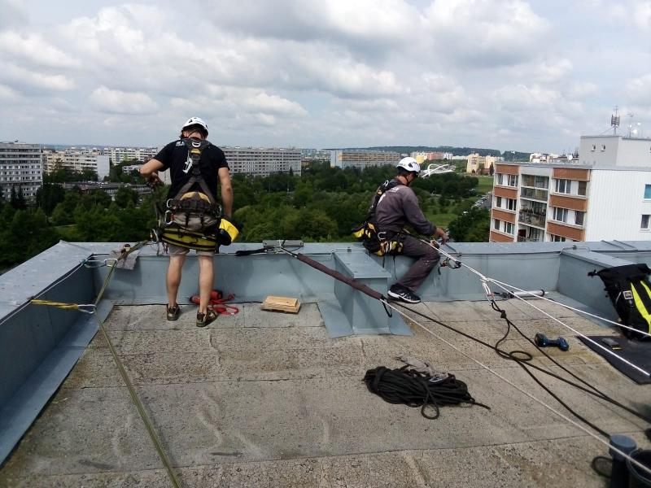
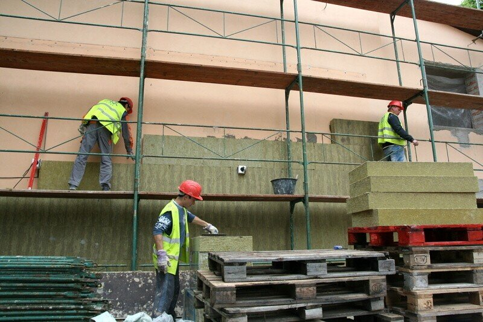
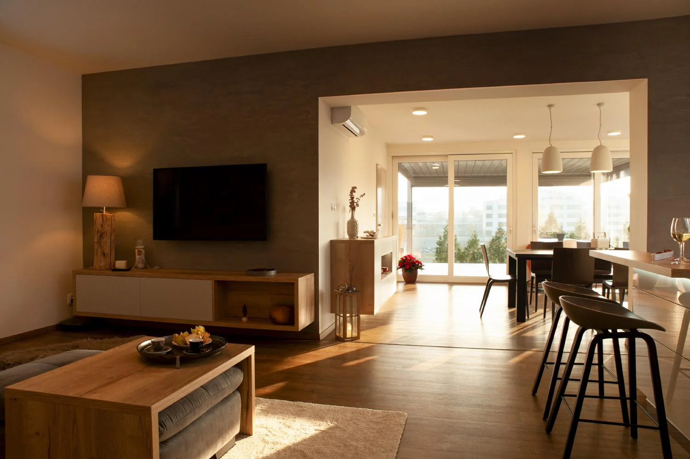

Co děláme?
- Stavby na klíč
- Komplexní služby: od návrhu po realizaci
- Kvalitní materiály: Používáme pouze prověřené materiály od renomovaných výrobců
- Firma má certifikát společnosti Caparol Czechia s.r.o.
- Individuální přístup: Každý projekt je pro nás jedinečný
- Záruka kvality: Na veškeré naše práce poskytujeme záruku
- Zpracujeme projekt na získání dotací – energie z obnovitelných zdrojů (kotle na pelety, fotovoltaika, tepelná čerpadla)
Kontakty
- Email: info@abcdefstav.cz
- Telefon: +420 123 456 789
- Web: www.abcdefstav.cz
- Facebook: facebook.com/abcdefstav
- Instagram: instagram.com/abcdefstav
- Bankovní spojení: CZ00 1234 5678 9012 3456
Stavby
- Příprava pro stavbu
- Hrubá stavba, zdivo, jádra, klasik a dekorativní omítky, podlahové topení a různé
Rekonstrukce historických budov, bytů i interiéru
- Oprava nebo výměna omítek, štuků, soch a dalších prvků
- Ochrana před vlhkem a plísněmi
- Odstranění vlhkosti, solí a dalších poškození zdiva
- Oprava nebo výměna střešních krytin, krovů a dalších prvků střechy
- Demontáž starých zařizovacích předmětů a obkladů
- Instalace nových sanitárních zařízení a obkladů
- Podlahové topení
Vodohospodářské stavby
- Obnovení rybníků
- Oprava kamenných a betonových zdí vodních toků a malých řek
V minulých letech jsme spolupracovali a realizovali
- Mateřská škola XYZ- Varnsdorf
- Rekonstrukce stáre celnice na hotel
- Rekonstrukce učeben a toalet ZŠ, Varnsdorf
- Rekonstrukce historické fásády RD, Varnsdorf
- Oprava oplocení - ZŠ
- A mnohé další